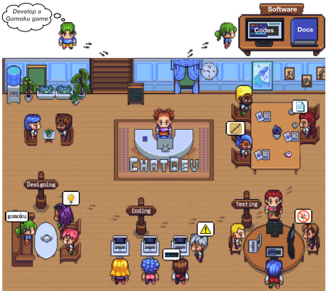
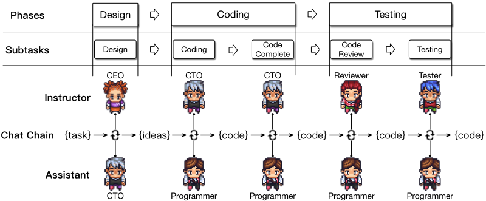
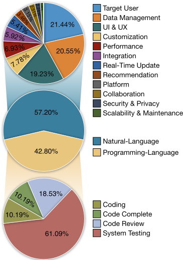
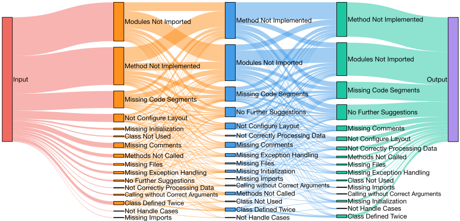
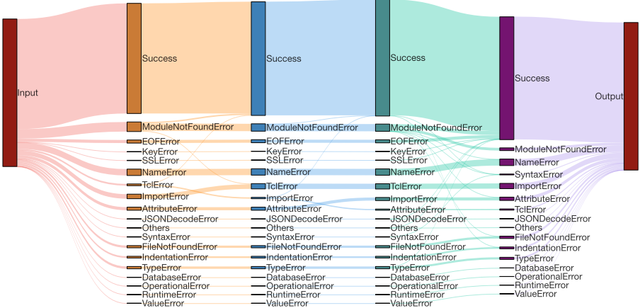

ChatDev：面向软件开发的通信式智能体
该论文针对两个问题：传统瀑布模型中各阶段（设计、编码、测试）的深度学习辅助方法彼此割裂、流程碎片化；以及 LLM 生成代码时的 coding hallucinations（代码不完整、不可执行、不符合需求）导致需要额外人工干预。方法上提出 ChatDev 多 Agent 框架：以 chat chain 沿瀑布模型把开发拆为设计、编码（编写+补全）、测试（代码审查+系统测试）等顺序子任务，每步由 instructor 与 assistant 双 Agent 多轮对话达成共识，解决'沟通什么'；以 communicative dehallucination 让 assistant 在正式回答前主动向 instructor 追问细节，解决'如何沟通'；并按阶段划分短期/长期记忆，跨阶段只传解不传完整历史以规避上下文长度限制。在自建 SRDD 数据集（1,200 个软件任务提示）上，ChatDev 在完整性、可执行性、一致性与综合质量上全面超过 GPT-Engineer 与 MetaGPT，Quality 从 0.1523 提升至 0.3953，并在 GPT-4 与人类成对评估中平均胜率最高；消融实验表明移除角色设定影响最大，移除 dehallucination 则所有指标下降。
已有工作用深度学习分别改进瀑布模型的单个阶段（设计、编码、测试），各阶段方法技术不一致、相互隔离，导致开发流程碎片化低效；同时 LLM 在生成代码时频繁出现 coding hallucinations（不完整、不可执行、不满足需求的代码），反映 Agent 自主完成任务能力受限，需要额外人工干预，阻碍生成软件的即用性与可靠性。
ChatDev 是一个 chat-powered 多 Agent 软件开发框架，包含：1) chat chain：沿瀑布模型将流程分为设计、编码（代码编写+代码补全）、测试（代码审查+系统测试）三个阶段共五个子任务，每个子任务由 instructor 与 assistant 双 Agent 多轮对话直至共识，提取文本或代码形式的解，并作为桥梁传递给下一子任务，指导 Agent '沟通什么'；2) communicative dehallucination：通过'角色反转'让 assistant 在给出正式回答前主动向 instructor 追问更具体的信息（如外部依赖的精确名称），逐个解决具体问题，减少 coding hallucinations；3) inception prompting：用基本对称的 instructor/assistant 系统提示实例化角色，涵盖子任务目标、角色、可用外部工具、通信协议、终止条件与约束；4) 记忆管理：阶段内用短期记忆保存完整对话，跨阶段仅把各子任务的解作为长期记忆注入下一阶段开头，避免上下文过载；5) 双 Agent 通信设计避免复杂多 Agent 拓扑，简化共识达成。
在自建 SRDD 数据集（1,200 个软件任务提示，5 大领域、40 子类、每类 30 个任务）上，ChatDev 在所有指标上超过 GPT-Engineer 与 MetaGPT；相比 MetaGPT，Quality 从 0.1523 显著提升至 0.3953
在 GPT-4 与人类参与的成对评估中，ChatDev 对所有基线的平均胜率更高（正文未给出具体胜率数值）
通信分析：自然语言占全部 Agent 通信的 57.20%；代码审查中 'Method Not Implemented' 问题占审查讨论的 34.85%；测试阶段最常见错误为 'ModuleNotFound'（45.76%），'NameError' 与 'ImportError' 各占 15.25%
消融实验：代码补全阶段提升 Completeness，测试阶段对 Executability 关键；移除 communicative dehallucination 使所有指标下降；将所有 Agent 的角色从系统提示中移除对性能影响最大
多 Agent 范式比单 Agent 方法更慢、消耗更多 token，但生成更多代码文件与更大代码库，并常自主添加需求未明确要求的有益功能
与 MetaGPT 等依赖人类专家预定义静态指令的多 Agent 框架不同，ChatDev 强调 Agent 通过自然语言与编程语言混合的多轮对话自主提出并持续迭代优化方案；采用双 Agent 通信避免复杂多 Agent 拓扑；提出 communicative dehallucination 这一'角色反转'通信模式，让 assistant 主动追问细节以抑制 coding hallucinations；并按 chat chain 阶段划分短期/长期记忆，跨阶段只传递解而非完整对话历史，将语言作为统一桥梁贯通各开发阶段。
相关度级别：high
命中能力域：3.4 多智能体协作 | 3.3 Agent 架构与工具使用 | 3.1 上下文工程与记忆 | 3.2 提示工程 | 3.5 评测与可靠使用
理由：该论文是'如何用好 LLM 而非训练模型'的代表性工作，同时命中团队全部五个能力域：chat chain 的任务分解与 instructor/assistant 双 Agent 通信协议、终止条件设计直接对应 3.4 多智能体协作与 3.3 Agent 架构（Agent loop/harness）；按阶段切分短期/长期记忆、'只传解不传全史'的上下文压缩策略对应 3.1 上下文工程与记忆；inception prompting 与角色化系统提示（消融证明角色设定影响最大）对应 3.2 提示工程；自建 SRDD 评测集、Completeness/Executability/Consistency/Quality 多维指标、GPT-4+人类成对评估以及 coding hallucination 治理对应 3.5 评测与可靠使用。对团队构建代码生成/审查、测试辅助与多 Agent 自动化流程有直接参考价值。
建议动作：深入精读并做内部分享
arXiv:2307.07924v5 [cs.SE] 2024年6月5日
⋆
Chen Qian ⋆ Wei Liu ⋆ Hongzhang Liu ♠ Nuo Chen ⋆ Yufan Dang ⋆ Jiahao Li ⋆ Cheng Yang ♣ Weize Chen ⋆ Yusheng Su ⋆ Xin Cong ⋆ Juyuan Xu ⋆ Dahai Li ♦ Zhiyuan Liu ⋆ Maosong Sun ⋆
清华大学
♠ 悉尼大学
♣ 北京邮电大学（BUPT） ♦ 面壁智能（Modelbest Inc.）
qianc62@gmail.com liuzy@tsinghua.edu.cn sms@tsinghua.edu.cn
软件开发是一项复杂的任务，需要具备多种不同技能的多个成员相互协作。大量研究利用深度学习来改进瀑布模型中的特定阶段，例如设计、编码和测试。然而，每个阶段的深度学习模型都需要独特的设计，导致各阶段之间技术上的不一致，从而使开发过程碎片化且低效。在本文中，我们提出了 ChatDev，一个由聊天驱动的软件开发框架，其中由大语言模型（LLM）驱动的专职 Agent 在沟通什么（通过聊天链，chat chain）以及如何沟通（通过交流式去幻觉，communicative dehallucination）方面受到引导。这些 Agent 通过统一的基于语言的交流，积极参与设计、编码和测试阶段，其解决方案源自它们的多轮对话。我们发现，它们对自然语言的运用有利于系统设计，而使用编程语言进行交流则被证明有助于调试。这一范式展示了语言交流如何促进多智能体协作，将语言确立为 LLM Agent 之间自主解决任务的统一桥梁。代码和数据可在 https://github.com/OpenBMB/ChatDev 获取。
大语言模型（LLM）因其能够轻松整合以语言表达的广泛知识（Brown et al., 2020; Bubeck et al., 2023），并具备在指定角色内进行角色扮演的强大能力（Park et al., 2023; Hua et al., 2023; Chen et al., 2023b），而带来了深刻的变革。这一进展消除了针对特定模型进行设计的需求，并在多样化的下游应用中展现出令人瞩目的性能。此外，自主 Agent（Richards, 2023; Zhou et al., 2023a）因借助上下文感知记忆（Sumers et al., 2023）、多步规划（Liu et al., 2023）和策略性工具调用（Schick et al., 2023）等先进特性来增强 LLM 的能力而受到关注。
：通讯作者。

软件开发是一项复杂的任务，需要具备不同技能的多个成员（例如架构师、程序员和测试人员）之间的协作（Basili, 1989; Sawyer and Guinan, 1998）。这需要不同角色之间进行大量交流，通过自然语言来理解和分析需求，同时还包括使用编程语言进行开发和调试（Ernst, 2017; Banker et al., 1998）。大量研究利用深度学习来改进软件开发中瀑布模型的特定阶段，例如设计、编码和测试（Pudlitz et al., 2019; Martín and Abran, 2015; Gao et al., 2019; Wang et al., 2016）。由于这些技术上的不一致性，不同阶段所采用的方法至今仍彼此孤立。从数据收集与标注到模型训练与推理，每个阶段都需要其独特的设计，导致该领域的开发过程碎片化且效率较低（Freeman et al., 2001; Ernst, 2017; Winkler et al., 2020）。
受自主 Agent 类专家潜力的启发，我们旨在将语言确立为统一的桥梁——利用多个由 LLM 驱动、具有专门角色的 Agent，通过跨阶段的基于语言的交流进行协作式软件开发；无论处理的是文本还是代码，不同阶段的解决方案均源自它们的多轮对话。然而，由于 LLM 存在产生幻觉的倾向（Dhuliawala et al., 2023; Zhang et al., 2023b），通过交流型 Agent 生成软件的策略可能带来编码幻觉这一非平凡的挑战，即生成的源代码不完整、不可执行或不准确，最终无法满足预期需求（Agnihotri and Chug, 2020）。编码幻觉的频繁出现反过来反映了 Agent 在完成任务时自主性受限，不可避免地需要额外的人工干预，从而阻碍了所生成软件的即时可用性和可靠性（Ji et al., 2023）。
在本文中，我们提出了 ChatDev（见图 1），这是一个 ✿✿✿ 基于聊天驱动的软件-✿✿✿ 开发框架，它集成了多个“软件 Agent”，使其积极参与软件生命周期的三个核心阶段：设计、编码和测试。在技术上，ChatDev 使用聊天链（chat chain）将每个阶段进一步划分为更小的子任务，使 Agent 能够通过多轮交流协作地提出并开发解决方案（例如，创意想法或源代码）。这种链式结构的工作流指导 Agent 应该交流什么，促进协作，并将自然语言子任务与编程语言子任务顺畅地衔接起来，以推动问题求解。此外，为了尽量减少编码幻觉，ChatDev 包含一种交流式去幻觉机制，使 Agent 能够在给出直接回应之前主动请求更具体的细节。这种交流模式指导 Agent 应该如何交流，实现精确的信息交换，从而在减少编码幻觉的同时有效地优化解决方案。我们构建了一个包含软件需求描述的综合性数据集，并进行了全面的分析。结果表明，ChatDev 显著提升了软件质量，带来了更高的完整性、可执行性以及与需求更好的一致性。进一步的研究表明，自然语言交流有助于实现全面的系统设计，而编程语言交流则推动软件优化。总而言之，所提出的范式展示了语言交流如何促进多智能体协作，将语言确立为大语言模型（LLM）Agent 之间自主解决任务的统一桥梁。
大语言模型（LLM）在海量数据集上训练，以理解并操纵数十亿参数，凭借其对广泛知识的无缝整合，已成为自然语言处理领域的关键技术（Brown et al., 2020; Bubeck et al., 2023; Vaswani et al., 2017; Radford et al.; Touvron et al., 2023; Wei et al., 2022a; Shanahan et al., 2023; Chen et al., 2021; Brants et al., 2007; Chen et al., 2021; Ouyang et al., 2022; Yang et al., 2023a; Qin et al., 2023b; Kaplan et al., 2020）。此外，LLM 展现出强大的角色扮演能力（Li et al., 2023a; Park et al., 2023; Hua et al., 2023; Chan et al., 2023; Zhou et al., 2023b; Chen et al., 2023b,a; Cohen et al., 2023; Li et al., 2023b）。近期的进展，尤其是在自主 Agent 领域（Zhou et al., 2023a; Wang et al., 2023a; Park et al., 2023; Wang et al., 2023e; Richards, 2023; Osika, 2023; Wang et al., 2023d），在很大程度上归功于 LLM 的基础性突破。这些 Agent 借助 LLM 的强大能力，在记忆（Park et al., 2023; Sumers et al., 2023）、规划（Chen et al., 2023b; Liu et al., 2023）和工具调用（Schick et al., 2023; Cai et al., 2023; Qin et al., 2023a; Ruan et al., 2023; Yang et al., 2023b）方面展现出卓越的技能，使其能够在复杂场景中进行推理（Wei et al., 2022b; Zhao et al., 2023; Zhou et al., 2023a; Ma et al., 2023; Zhang et al., 2023a; Wang et al., 2023b; Ding et al., 2023; Weng, 2023）。
软件开发是一个多层面且复杂的过程，需要来自不同领域的多位专家协同合作（Yilmaz et al., 2012; Acuna et al., 2006; Basili, 1989; Sawyer and Guinan, 1998; Banker et al., 1998; France and Rumpe, 2007），既涵盖以自然语言进行的需求分析与系统设计（Pudlitz et al., 2019; Martín and Abran, 2015; Nahar et al., 2022），也包括以编程语言进行的系统开发与调试（Gao et al., 2019; Wang et al., 2016; Wan et al., 2022）。大量研究采用瀑布模型（waterfall model）——一种特定的软件开发生命周期——将该过程划分为若干离散阶段（例如设计、编码、测试），并应用深度学习来提升其中某些阶段的有效性（Winkler et al., 2020; Ezzini et al., 2022; Thaller et al., 2019; Zhao et al., 2021; Nijkamp et al., 2023; Wan et al., 2018; Wang et al., 2021）。

We introduce ChatDev, a ✿✿✿✿ chat-powered software-✿✿✿ development framework that integrates multiple "software agents" with various social roles ( e.g., requirements analysts, professional programmers and test engineers) collaborating in the core phases of the software life cycle, see Figure 1. Technically, to facilitate cooperative communication, ChatDev introduces chat chain to further break down each phase into smaller and manageable subtasks, which guides multi-turn communications between different roles to propose and validate solutions for each subtask. In addition, to alleviate unexpected hallucinations, a communicative pattern named communicative dehallucination is devised, wherein agents request more detailed information before responding directly and then continue the next round of communication based on these details.
尽管大语言模型（LLMs）对自然语言和编程语言表现出良好的理解能力，但如何在单一步骤中高效地将文本需求转化为可正常运行的软件，仍然是一项重大挑战。因此，ChatDev 采用了瀑布模型的核心原则，使用由顺序阶段（P）构成的聊天链（C），每个阶段又包含顺序执行的子任务（T）。具体而言，ChatDev 将软件开发过程划分为三个顺序阶段：设计、编码和测试。其中，编码阶段进一步细分为代码编写和代码补全两个子任务，测试阶段则被划分为代码审查（静态测试）和系统测试（动态测试），如图 2 所示。在每个子任务中，两个 Agent 各自承担专门的角色（例如，擅长识别死循环的审查者，以及精通 GUI 设计的程序员），分别履行指导者（I）和助手（A）的职能。指导者 Agent 发起指令，引导（→）对话朝着完成子任务的方向推进，而助手 Agent 则遵循这些指令，并回复（❀）适当的解决方案。双方进行多轮对话（C），协同合作直至达成共识，并提取（τ）出从文本（例如，定义软件功能点）到代码（例如，创建源代码的初始版本）不等的解决方案，最终完成该子任务。沿智能体工作流的整个任务求解过程可以形式化表示为：
双 Agent 通信设计通过避免复杂的多智能体拓扑结构来简化通信，有效精简了达成共识的过程（Yin et al., 2023; Chen et al., 2023b）。随后，先前任务的解决方案充当通往下一阶段的桥梁，使子任务之间得以平滑过渡。这一过程持续进行，直至所有子任务全部完成。值得注意的是，这种概念上简单但在实践中十分强大的链式结构能够指导 Agent 之间的沟通内容，促进协作，并将自然语言子任务与编程语言子任务平滑地衔接起来。它还为整个软件开发过程提供了透明的视图，便于检查中间解决方案，并有助于识别可能存在的问题。
通过仅共享各子任务的解决方案而非完整的通信历史，ChatDev 最大限度地降低了被过多信息淹没的风险，增强了对每项任务的专注，并鼓励更有针对性的协作，同时促进了跨阶段的上下文连续性。
当模型生成毫无意义、事实错误或不准确的输出时，便会表现出大语言模型（LLM）幻觉 (Dhuliawala et al., 2023; Zhang et al., 2023b)。这一问题在软件开发中尤为令人担忧，因为编程语言要求精确的语法——哪怕仅仅缺失一行代码都可能导致系统故障。我们观察到，LLM 常常产生编码幻觉（coding hallucinations），其涵盖诸如实现不完整、代码无法执行以及不符合需求的不一致问题等潜在问题。当助手难以精确遵循指令时，编码幻觉便会频繁出现，这往往是由于某些指令模糊而宽泛、需要多次调整所致，使得 Agent 难以实现完全遵从。受此启发，我们提出了交际去幻觉（communicative dehallucination），鼓励助手在给出正式回复之前，主动向指导者寻求更详细的建议。
具体而言，助手与指导者之间朴素的通信模式遵循一种简单直接的指令—响应格式：
相比之下，我们的交际去幻觉机制的特色在于一种刻意的“角色反转”：助手承担起类似指导者的角色，在给出最终回复之前，主动寻求更具体的信息（例如，某个外部依赖的精确名称及其相关的类）。在指导者提供具体的修改建议后，助手随即进行精确优化：
由于该机制每次只解决一个具体问题，因此需要通过多轮通信来优化各种潜在问题。这种通信模式指导 Agent 如何进行通信，实现更细粒度的信息交换，从而有效地优化解决方案，这在实践中有助于减少编码幻觉。
基线方法 我们选择了一些具有代表性的基于大语言模型（LLM）的软件开发方法作为基线。GPT-Engineer（Osika, 2023）是 LLM 驱动的软件 Agent 中一种基础性的单智能体方法，其对任务需求具有精确的理解并运用一步推理，这凸显了其在仓库级别生成详细软件解决方案方面的高效性。
MetaGPT（Hong et al., 2023）是一种先进的框架，它为各种 LLM 驱动的软件 Agent 分配特定角色，并纳入标准化操作流程以实现多智能体参与。在每一步中，具有特定角色的 Agent 通过遵循由人类专家预先定义的静态指令来生成解决方案。
数据集 需要指出的是，截至目前，在 Agent 驱动的软件开发的背景下，尚不存在公开可访问的、包含软件需求文本描述的数据集。为此，我们正积极致力于开发一个全面的软件需求描述数据集，我们将其称为软件需求描述数据集（Software Requirement Description Dataset, SRDD）。借鉴先前的工作（Li et al., 2023a），我们利用现有的软件描述作为初始示例，随后通过一个将基于 LLM 的自动生成与人工指导的后处理精炼相结合的过程对其进行进一步开发。最终，该数据集涵盖了来自 Ubuntu、Google Play、Microsoft Store 和 Apple Store 等热门平台的重要软件类别。它包含 1,200 条软件任务提示，这些提示被仔细地划分为 5 个主要领域：教育（Education）、工作（Work）、生活（Life）、游戏（Game）和创作（Creation）。所有这些领域进一步细分为 40 个子类别，每个子类别包含 30 条独特的任务提示。
评估指标 评估软件同样是一项具有挑战性的任务，尤其是在试图从整体层面对其进行评估时。在当前基准测试（benchmark）资源稀缺的限制下，传统的面向功能的代码生成指标（例如 pass@k）无法无缝迁移到对整个软件系统的综合评估中。其主要原因在于，为各种类型的软件开发手动或自动化测试用例往往并不现实，尤其是那些涉及复杂界面、频繁用户交互或非确定性反馈的软件。作为一种初始策略，我们采用三个反映编码幻觉不同方面的基本且客观的维度来评估 Agent 生成的软件，然后将它们整合起来，以便进行更全面的评估：
| Method | Paradigm | Completeness | Executability | Consistency | Quality |
|---|---|---|---|---|---|
| GPT-Engineer | 0.5022 † | 0.3583 † | 0.7887 † | 0.1419 † | |
| MetaGPT | 0.4834 † | 0.4145 † | 0.7601 † | 0.1523 † | |
| ChatDev | 0.5600 | 0.8800 | 0.8021 | 0.3953 |
| Method | Paradigm | Completeness | Executability | Consistency | Quality |
| Method | Evaluator | Baseline Wins | ChatDev Wins | Draw |
|---|---|---|---|---|
| GPT-Engineer | GPT-4 | 22.50% | 77.08% | 00.42% |
| GPT-Engineer | Human | 09.18% | 90.16% | 00.66% |
| MetaGPT | GPT-4 | 37.50% | 57.08% | 05.42% |
| MetaGPT | Human | 07.92% | 88.00% | 04.08% |
| Method | Evaluator | Baseline Wins | ChatDev Wins | Draw |
实现细节 我们将软件开发划分为3个阶段内的5个子任务，并为其分配了诸如CEO、CTO、程序员、审查者和测试者等特定角色。子任务会在代码修改连续两次未发生变化或经过10轮通信后终止并得出结论。在代码补全、审查和测试过程中，会激活一种通信式去幻觉（communicative dehallucination）机制。为便于识别解决方案，当达成共识时，助手会以"<SOLUTION>"开始其回复。我们使用温度（temperature）为0.2的ChatGPT-3.5，并集成了Python-3.11.4以提供反馈。为保证公平性，评估中的所有基线方法均采用相同的超参数和设置。
1 应从代码中排除注释，以避免评估过程中潜在的信息泄露。
2 也可以选择对各子指标求平均值，这会得到相似的趋势。
| Method | Duration (s) | #Tokens | #Files | #Lines |
|---|---|---|---|---|
| GPT-Engineer | 15.6 | 7182.53 | 3.9475 | 70.2041 |
| MetaGPT | 154 | 29278.7 | 4.4233 | 153.3 |
| ChatDev | 148.215 | 22949.4 | 4.39 | 144.345 |
| Method | Duration (s) | #Tokens | #Files | #Lines |
如表1所示，ChatDev在所有指标上均优于所有基线方法，展现出相当可观的提升幅度。首先，ChatDev和MetaGPT相对于GPT-Engineer的改进表明，复杂任务难以通过单步求解的方式解决。因此，将困难问题显式地分解为若干更小、更易于管理的子任务，能够提高任务完成的有效性。此外，与MetaGPT相比，ChatDev将Quality从0.1523显著提升至0.3953。这一进步主要归因于智能体（Agent）采用了一种协作式通信方法，即通过自然语言与编程语言相结合的方式自主提出并持续完善源代码，而非仅仅依据人类预先定义的指令来交付响应。这些通信智能体引导每个子任务走向集成化、自动化的解决方案，有效克服了通常与人工建立的优化规则相关联的限制，并为问题求解提供了更加通用、更具适应性的框架。
为了进一步了解实际场景中的用户偏好，我们采用了Li et al. (2023a)所使用的设置，即由人类参与者和广泛使用的GPT-4模型对智能体生成的解决方案进行成对比较，以识别更受青睐的方案。3 表2显示，ChatDev持续优于其他基线方法，在GPT-4评估和人类评估中均获得了更高的平均胜率。
| Variant | Completeness | Executability | Consistency | Quality |
|---|---|---|---|---|
| ChatDev | 0.56 | 0.88 | 0.8021 | 0.3953 |
| ≤ Coding | 0.41 | 0.77 | 0.7958 | 0.2512 |
| ≤ Complete | 0.625 | 0.74 | 0.7978 | 0.369 |
| ≤ Review | 0.575 | 0.81 | 0.798 | 0.3717 |
| ≤ Testing | 0.56 | 0.88 | 0.8021 | 0.3953 |
| ⧹ CDH | 0.47 | 0.84 | 0.7983 | 0.3094 |
| ⧹ Roles | 0.54 | 0.58 | 0.7385 | 0.2212 |
| Variant | Completeness | Executability | Consistency | Quality |
此外，表3中呈现的软件统计信息表明，多智能体（multi-agent）范式尽管比单智能体方法更慢且消耗更多token，但能生成数量更多的代码文件和规模更大的代码库，这可能增强软件的功能性与完整性。对智能体对话的分析表明，多智能体通信方法常常促使智能体自主提出功能增强（例如创建GUI或提高游戏难度），从而可能使软件纳入需求中未明确指定的有益特性。综合所有这些因素，我们认为多智能体软件开发的基本特性具有更重要的意义，在当前形势下超越了时间和经济成本等短期考量。
本节通过移除聊天链（chat chain）中的特定阶段、通信式去幻觉（communicative dehallucination）机制，或系统提示中分配给所有智能体的角色，来考察我们多智能体协作框架中的关键组件或机制。图4显示，代码完成（code complete）阶段提升了完整性（Completeness），而测试对可执行性（Executability）至关重要。质量随每一步稳步提升，表明软件开发的优化是通过智能体之间的多阶段通信逐步实现的。与此同时，移除通信式去幻觉机制会导致所有指标下降，表明其在应对编码幻觉方面的有效性。最有趣的是，当所有智能体的角色从其系统提示中被移除时，对性能的影响最为显著。详细的对话分析表明，为程序员分配“偏好GUI设计”（prefer GUI design）的角色，会使其生成的源代码包含相应的GUI实现；而在缺乏此类角色指示的情况下，则默认仅实现不友好的纯命令行程序。同样，分配诸如“细致的缺陷检测审查者”（careful reviewer for bug detection）之类的角色能提高发现代码漏洞的几率；若没有此类角色，反馈往往停留在较高层面，导致程序员所作的调整有限。这一发现凸显了角色分配在引导大语言模型（LLM）产生响应方面的重要性，也强调了多智能体协作对软件质量的显著影响。
3 为公平起见，GPT-4的评估缓解了可能存在的位置偏差（Wang et al., 2023c），且人类专家独立评估了任务解决方案，并通过随机化来防止顺序偏差。

我们基于智能体驱动的软件开发范式通过有效的通信促进协作智能体，以实现解决方案的自动优化。聊天链（chat chain）中的各个阶段对自然语言和编程语言的参与程度各不相同。

我们现在分析它们之间通信的内容，以理解语言效应。
图3展示了通信内容的构成比例，其中自然语言占57.20%。在自然语言阶段（即设计阶段），自然语言通信在系统的全面设计中发挥着至关重要的作用，各智能体自主讨论并设计目标用户、数据管理、用户界面等方面。设计之后的阶段则呈现出编码、代码补全和测试活动的均衡组合，其中大部分通信发生在代码审查过程中。这一趋势源于智能体的自我审查和代码修复持续推动软件开发；否则，当连续的更新未显示出显著变化时，进展便会停滞，从而导致代码审查通信自然减少。
如图4所示，我们探究了由审查者与程序员之间的通信所产生的代码审查中静态调试动态的特性。数据揭示，在审查阶段，审查者可能通过语言交互发现各种不同的问题。程序员的干预可以将某些问题转化为其他问题，或使其进入无需进一步建议的状态；后者所占比例的不断上升表明软件优化取得了成功。特别地，“Method Not Implemented”（方法未实现）问题在代码审查期间审查者与程序员之间的通信中最为常见，占讨论内容的34.85%。这一问题通常源于文本需求不清晰以及Python代码中使用"placeholder"（占位符）标签，因而需要额外的手动调整。此外，"Module Not Imported"（模块未导入）问题常常因代码生成遗漏关键细节而产生。除常见问题外，审查者还常常专注于通过识别罕见异常、未使用的类或潜在的无限循环来增强代码的健壮性。
同样地，我们分析了测试阶段中测试员与程序员之间的通信，如图5所示，呈现了二者在带有编译器反馈的多轮交互中动态调试的动态过程。每一步成功编译的可能性总体上高于遇到错误的可能性，且大多数错误会持续存在，转变为其他类型错误的概率较低。最常见的错误是“ModuleNotFound”（45.76%），其次是“NameError”和“ImportError”（各占15.25%）。这一观察凸显了模型容易忽略“import”语句等基本要素的倾向，也表明其在代码生成过程中难以处理复杂细节。此外，测试员还检测到一些较为少见的错误，例如初始化不当的图形用户界面（GUI）、错误的方法调用、缺失的文件依赖以及未使用的模块。这种通信式去幻觉机制能够有效解决某些错误，代码修改后经常出现“编译成功”的结果。从编译成功状态回退到错误状态的概率极低。随着时间推移，多轮通信过程在统计上呈现出错误持续减少的趋势，稳步迈向软件的成功执行。

We have introduced ChatDev, an innovative multiagent collaboration framework for software development that utilizes multiple LLM-powered agents to integrate fragmented phases of the waterfall model into a cohesive communication system. It features chat chain organizing communication targets and dehallucination for resolving coding hallucinations. The results demonstrate its superiority and highlight the benefits of multi-turn communications in software optimization. We aim for the insights to advance LLM agents towards increased autonomy and illuminate the profound effects of "language" and its empowering role across an even broader spectrum of applications.
我们的研究探索了协作式自主 Agent 在软件开发中的潜力，但研究人员和从业者必须考虑其中存在的某些局限性与风险。首先，自主 Agent 在软件生产中的能力可能被高估。尽管它们能够提升开发质量，但 Agent 通常实现的是简单逻辑，导致信息密度较低。在缺乏清晰、详细需求的情况下，Agent 难以把握任务的核心思想。例如，在开发贪吃蛇游戏时，模糊的指导会导致较为基础的呈现形式；在信息管理系统中，Agent 可能会检索静态的键值占位符，而非外部数据库。因此，明确定义详细的软件需求至关重要。目前，这些技术更适合用于原型系统，而非复杂的现实世界应用。其次，与传统的函数级代码生成不同，对通用软件的评估实现自动化是高度复杂的。尽管已有一些研究工作聚焦于人工修订成本（Human Revision Cost）(Hong et al., 2023)，但对大规模数据集进行人工验证并不现实。本文强调完整性、可执行性、一致性和整体质量，但未来的研究还应考虑功能性、鲁棒性、安全性和用户友好性等其他因素。第三，与单 Agent 方法相比，多个 Agent 需要更多的 token 和时间，从而增加了计算需求和环境负担。未来的研究应致力于通过更少的交互来增强 Agent 的能力。尽管存在这些局限性，我们相信，吸引更广泛且具备技术能力的受众参与，将有助于为大语言模型（LLM）驱动的多智能体协作解锁更多潜在方向。
1 条证据未在原文中核对到